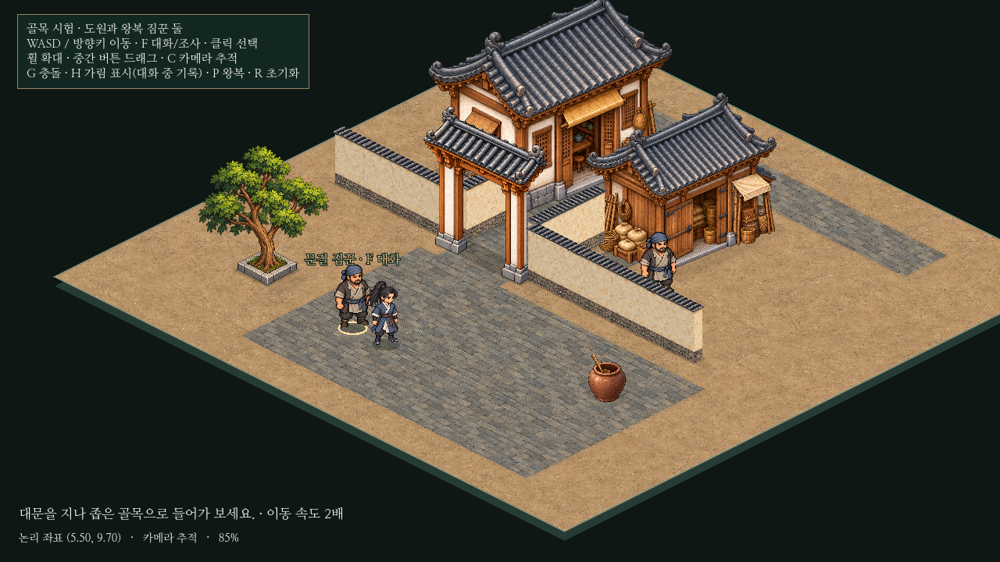
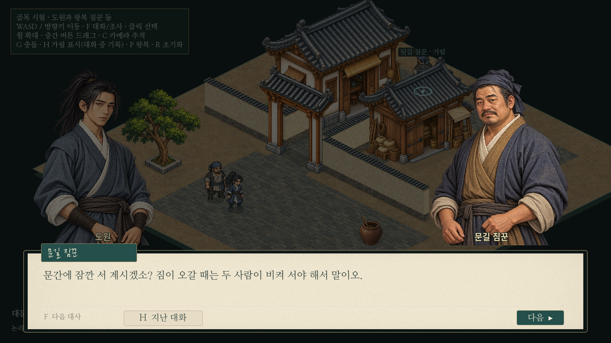
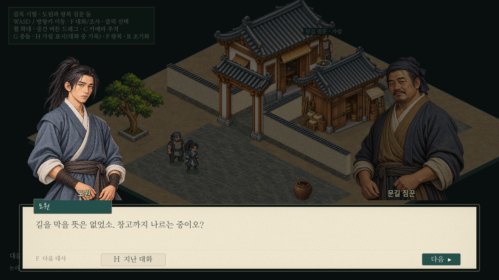
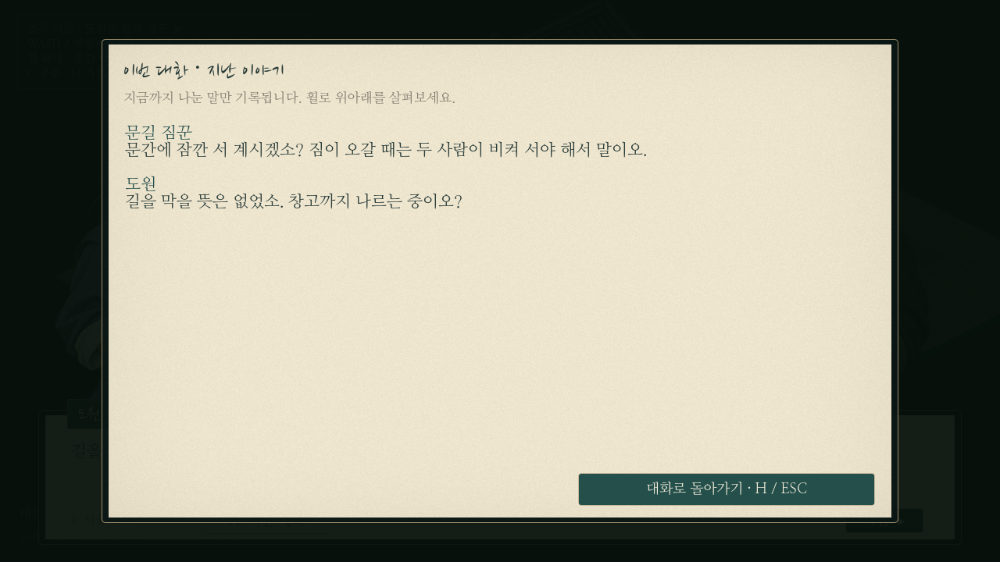
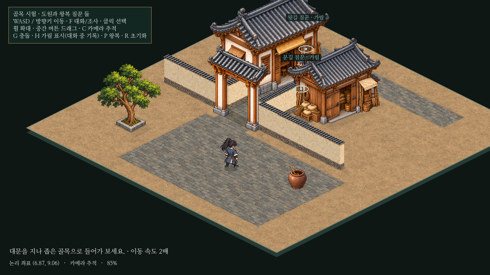
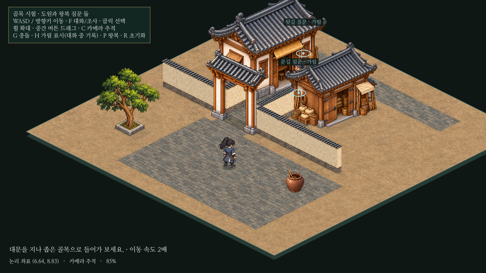

F 대화 · 공용 UI 연결과 정지 방향 확인
F 대상은 가까운 접근 가능한 한 명. 대화는 F/다음 버튼, 기록은 H, 기록에서 복귀는 H/ESC입니다. 대화 중 도원과 상대만 멈추며, 공용 기록 창을 읽는 동안은 기존 방식대로 장면 전체가 잠시 정지합니다. 두 NPC의 속도는 기존4.8입니다.
실제 진행 영상 · 10.7초
대상 선택과 대화

가까운 대상 이름과 발밑 강조
공용 패널/초상화 · 상대가 말하면 도원은 어둡게화자 전환과 기록

도원이 말하면 상대는 어둡게 · 위치는 유지
실제로 표시한 두 줄만 기록 · 미래 대사는 숨김W+D 이동 후 정지

W+D 이동
키를 차례로 뗀 뒤에도 같은 방향 유지두 번째 짐꾼 · 종료 후 왕복 재개 · 1440p · 영상 파일
짧은 대화용 독립 어댑터입니다. 본게임의 이야기·저장·전투와 연결하지 않았습니다. 영상의30fps는 기록 속도이며 기기별 성능 수치가 아닙니다.